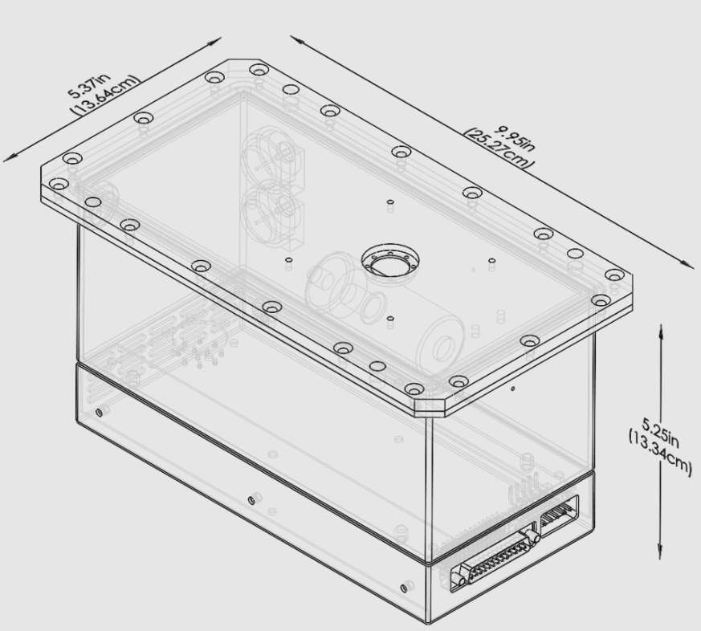

Source Ray is a company that manufactures OEM x-ray source blocks for clients in a range of different industries as well as portable x-ray systems. During my time at Source Ray, I contributed to the mechanical design of two new source blocks in addition to an upgrade on one of the portable x-ray systems.
SR130 Upgrade
Summary
While at Source Ray, an upgrade to the existing SR130 portable x-ray system was undertaken. During this project, I was involved in redesigning many of the sheet metal components and weldments to allow for the use of an updated laptop and x-ray panels.
Skills Used:
- Solidworks
- Manufacturing Processes: sheet metal fabrication, tube bending, welding, powdercoating, CNC machining
- IEC 60601-1
OEM Source Blocks
Summary
While at Source Ray, I also worked on the mechanical design of two new OEM source blocks: the 1 kW, 160 kV XRS-160-6.25K-HE and the smaller 40 W, 80 kV SB-80-500. I designed many of the sheetmetal components, which were lead-lined to maintain x-ray leakage below an acceptable threshold. I also ensured the design was compiant with IEC 60601-1 and conducted risk analysis / FMEA.

Skills Used:
- Solidworks
- Manufacturing Processes:sheet metal fabrication, welding, CNC machining
- IEC 60601-1